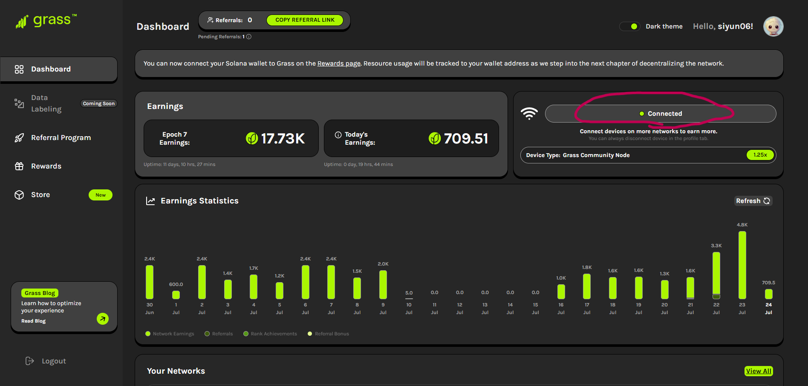
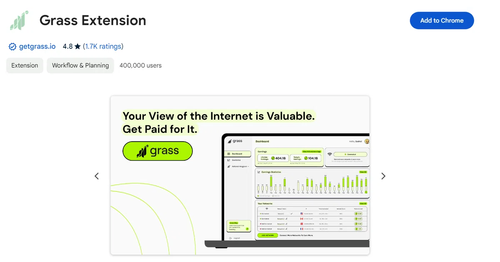
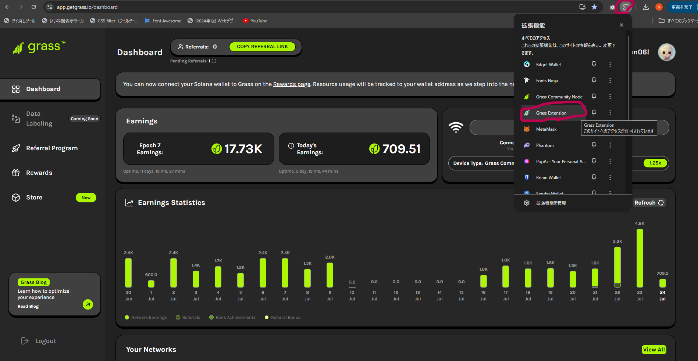
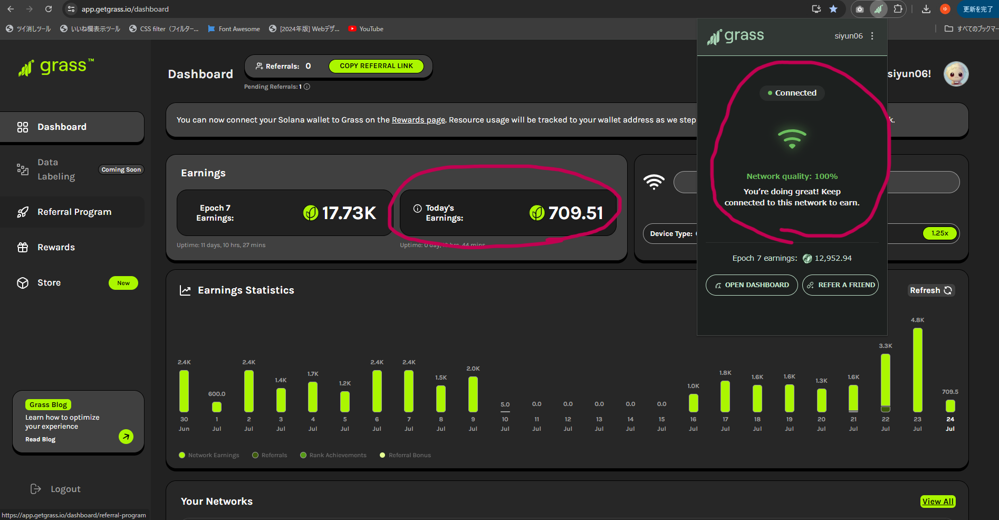

Grassとは
簡単に言うと、WiFiの使ってない帯域幅(全体の約0.3%)を貸し出して報酬として仮想通貨をもらえるものです。
(正確には、ポイントがもらえて、それが今後トークン化(仮想通貨になる)されます。)
必要なもの
・ PC(Chromeが立ち上がるならスペック不問です。)
・ WiFi(回線が遅くても問題ありません。)
・ Chrome(拡張機能をいれるのでプラウザはChromeを使用します。)
始め方
1. 下記のボタンからGrassに登録します。
Grassに登録する2. メールアドレスを登録します。
3. 画像の丸印のところにConnctとあるので、クリックします。
4. Grass Extension というChromeの拡張機能をインストールする。
5. Grassの画面に戻り、ダウンロードした拡張機能を動かす。
最初はメールアドレス/ユーザー名とパスワードを入力し、ログインする必要がある。
すぐには繋がらないので気長に待ちます。
(うまく繋がらない場合はページを更新したり、右上の「ReConnect」を押したりしてみてください。)
成功例
上手くできますと、画像の通りになります。
変更点
- Grass Extensionが画像のようになっている
- Today's Earningsのところのポイントが増えている。
(繋がってるのにポイントが増えない場合はページを再読み込みしてください。再読み込みのタイミングでポイントが増える仕組みです。)